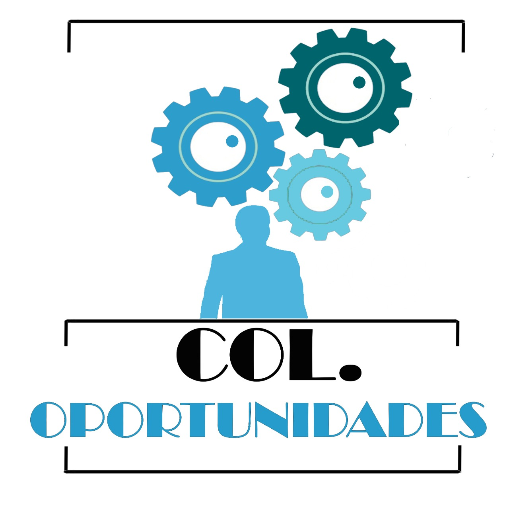

Desarrollar un sistema de información que permita una conexión entre la comunidad local y aquellas personas que quieren dar a conocer sus servicios a ofertar, estas personas van a poder ofrecer sus servicios técnicos e informales, por medio de una plataforma web. A su vez, gestionar la inscripción de trabajadores independientes, facilitar el proceso de adquisición de servicios de trabajadores independientes, organizar el proceso de servicio al cliente, gestionar el proceso de postulación de un servicio entre oferentes y clientes.